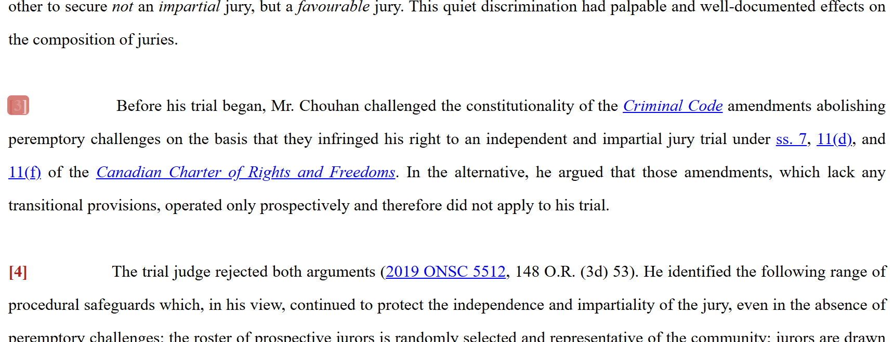
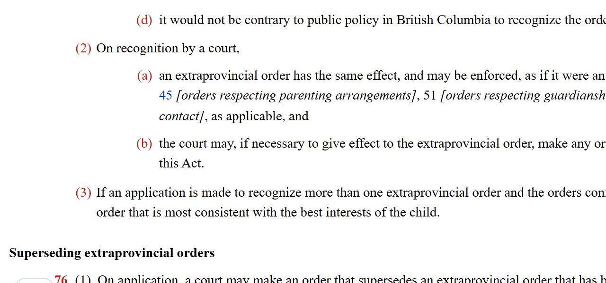
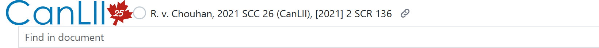
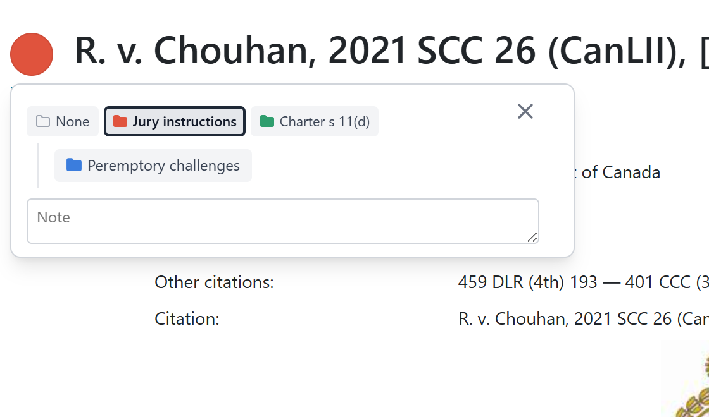
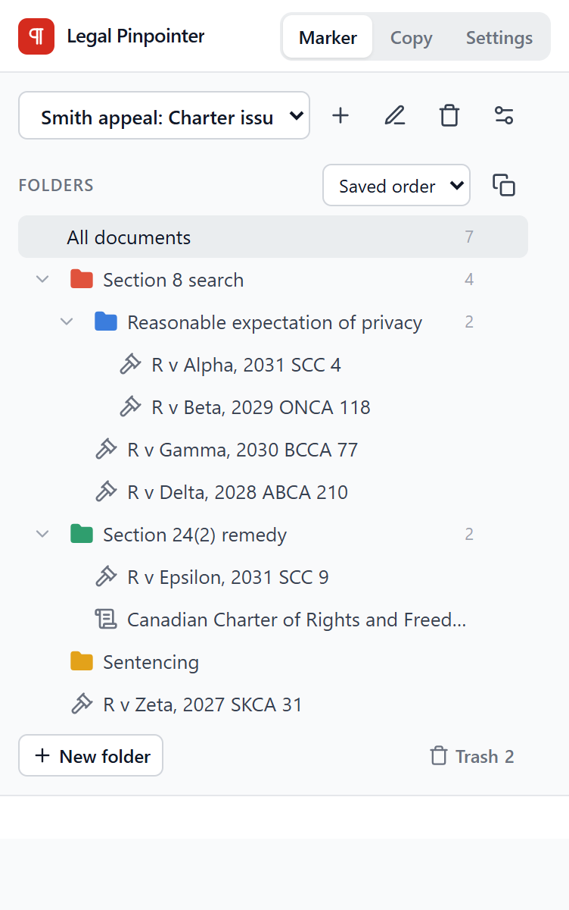
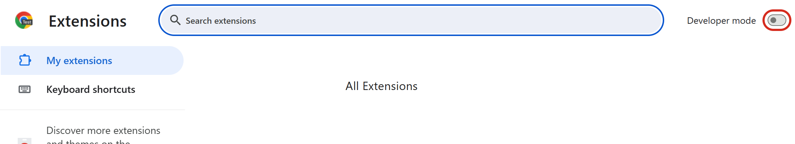
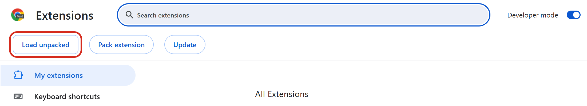
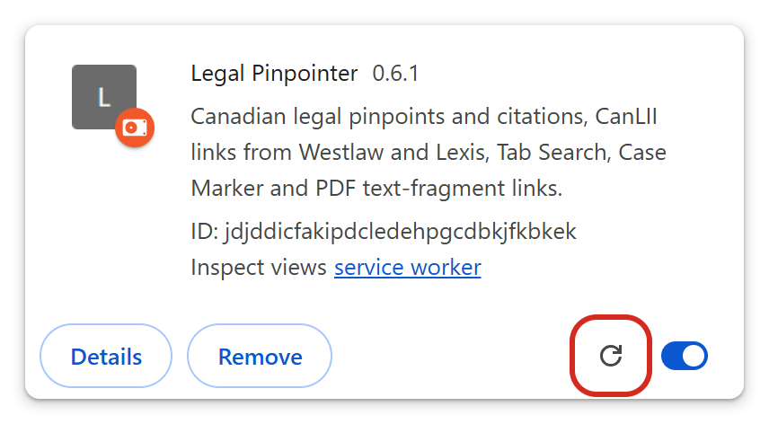

Click a paragraph number
Paragraph numbers are red on CanLII, Westlaw and Lexis. Click one and its pinpoint is copied, linked to that paragraph, ready to paste after your citation.
A note at the bottom of the window confirms what was copied.

R v Chouhan, 2021 SCC 26, on CanLII.
Copy a citation or quote
Point at a paragraph, or select some text, and press:
Pinpoint any provision
Section, subsection and paragraph numbers in statutes on CanLII are red too. Click one to copy the full pinpoint, such as s 75(2)(b), linked to that provision.

Family Law Act, SBC 2011, c 25, s 75, on CanLII.
Open it on CanLII
Three small buttons follow the title of a Westlaw or Lexis case or statute.
- Opens the same document on CanLII. Greyed out when there's no CanLII version; a courthouse means it's only on the court's website.
- The case's Case Marker circle.
- Copies the citation, linked to CanLII where possible.
File cases as you read
There is a circle next to each case name on CanLII search results and in document titles, and next to the title on Westlaw, Lexis and court websites. Click it to file the case in a folder and add a note; it then takes the folder's colour.
The extension also tries to detect when a case on Westlaw or Lexis is the same as a case on CanLII, so a case filed on one shows as filed on the others.


Organize cases
Click the extension's icon in the toolbar. The Marker tab lists your folders and the cases filed in them; click a case to open it. New folder is at the bottom, and a folder's ⋯ menu renames, moves or deletes it.
The Copy tab has the copy commands for the page you're on, and Settings turns any feature off.

Add it to Chrome or Edge
It isn't in the Chrome Web Store, so it's added by hand, once. Edge works the same way; the differences are noted.
Download the zip from the top of this page.
In Downloads, right-click
legal-pinpointer.zip, choose Extract All… and extract it to a folder you'll keep, such asDocuments\Legal Pinpointer. The browser runs the extension from there.Go to
Edge:chrome://extensions.edge://extensionsTurn on Developer mode.
Edge: the switch is in the left-hand column.
Click Load unpacked and select the extracted folder, the one containing
manifest.json.
Pin it from the puzzle-piece menu beside the address bar (Edge: the eye icon), then reload any CanLII, Westlaw or Lexis tabs you had open.

Advanced guide
Settings and features you won't need on day one.
Copy controls
Settings › Copy controls chooses how copying appears on a page: the red numbers (the default), small buttons in the margin, or a bar at the bottom of the window that copies whatever text you've selected.
PinpointCtrl XQuoteCtrl ⇧ XCitationAlt XThe Copy tab switches between at para 12 and the bare 12.
Unnumbered decisions
Older Supreme Court decisions on CanLII have no paragraph numbers, but CanLII shows where the report's pages break; those are used instead (at 534). A decision with neither is copied without a pinpoint.
Ordinary copying
Copy part of a judgment or statute with Ctrl C and its paragraph and section numbers stay linked to the source. Statute text also tries to keep its layout in Word.
The statute layout doesn't always survive Word's default paste ("merge formatting"). Turn off Indented statute copies in Settings to paste plain text.
On provider pages
- A bar with the citation, the CanLII button and Copy link stays at the top as you scroll Westlaw, Lexis and court websites.
- Alt C opens the CanLII version.
- Westlaw's and Lexis's highlighting pop-ups stop appearing when you select text.
- On CanLII, a cited paragraph gets a Cited N button listing the decisions that cite it.
Case Marker
- Subfolders: the + on a folder makes one inside it.
- Projects: separate sets of folders for different files.
- Copy a list: a folder's cases as links, with or without notes.
- Trash: deleted folders, projects and cases can be restored.
- Backup: Export and Import, in the Marker tab's settings.
Other tools
Privacy
Everything runs in your browser. Nothing you read is sent anywhere, and your folders are stored only in your browser. If a shortcut doesn't work, another extension may be using it; change it at chrome://extensions/shortcuts.